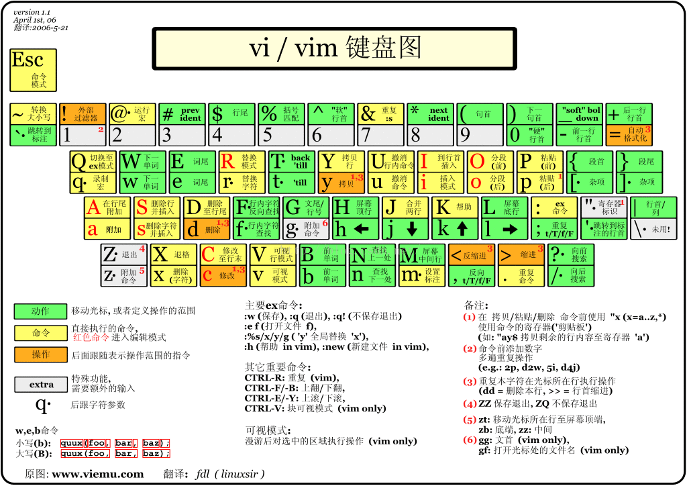

一切皆文件
Linux目录介绍
- /bin: 存放经常使用的命令，例如：cd、chmod、chown等等
- /boot: 存放Linux启动的一些核心文件，包括一些连接文件以及镜像文件。
- /dev: 存放Linux的外部设备，类似于Windows下的设备管理器，Linux将设备作为文件进行管理
- /etc: 系统配置文件这个目录用来存放所有的系统管理所需的配置文件和子目录
- /home: 用户主目录，每个用户都有一个属于自己的主目录
- /lib: 存放动态链接库，几乎所有应用程序都需要用到这些共享库。类似于Windows下的DLL文件
- /lost+found: 一般情况为空，当硬盘系统发生错误后会将一些遗失文件放置在该目录下。当新挂载一个磁盘就会出现该目录。
- /media: 会将一些媒体设备挂载到该目录下，例如U盘、光驱。
- /mnt: 挂载目录，可以挂载临时文件系统。
- /opt: 额外软件安装目录。
- /usr/local: 是另一个给主机额外安装软件的目录，一般是通过编译方式安装的程序存放到该目录下。
- /proc: 内存虚拟目录，是系统内存的映射。
- /root: root用户主目录
- /sbin: 存放系统管理员使用的系统管理程序
- /selinux: 这个目录是Redhat/CentOS所特有的目录，Selinux是一个安全机制，类似于windows的防火墙，但是这套机制比较复杂，这个目录就是存放selinux（安全子系统）相关的文件的。
- /srv: 该目录存放一些服务启动之后需要提取的数据。
- /sys: 这是linux2.6内核的一个很大的变化。该目录下安装了2.6内核中新出现的一个文件系统 sysfs。sysfs文件系统集成了下面3种文件系统的信息：针对进程信息的proc文件系统、针对设备的devfs文件系统以及针对伪终端的devpts文件系统。该文件系统是内核设备树的一个直观反映。当一个内核对象被创建的时候，对应的文件和目录也在内核对象子系统中被创建。
- /tmp: 存放系统临时文件
- /usr: 这是一个非常重要的目录，用户的很多应用程序和文件都放在这个目录下，类似于windows下的program files目录。
- /usr/bin: 系统用户使用的应用程序。
- /usr/sbin: 超级用户使用的比较高级的管理程序和系统守护程序。
- /usr/src: 内核源代码默认的放置目录。
- /var: 这个目录中存放着在不断扩充着的东西，通常放置经常被修改的目录放在这个目录下。包括各种日志文件。
- /run: 是一个临时文件系统，存储系统启动以来的信息。当系统重启时，这个目录下的文件应该被删掉或清除。如果你的系统上有 /var/run 目录，应该让它指向 run。
在 Linux 系统中，有几个目录是比较重要的，平时需要注意不要误删除或者随意更改内部文件。
/etc： 上边也提到了，这个是系统中的配置文件，如果你更改了该目录下的某个文件可能会导致系统不能启动。
/bin, /sbin, /usr/bin, /usr/sbin: 这是系统预设的执行文件的放置目录，比如ls就是在 /bin/ls 目录下的。
值得提出的是，/bin, /usr/bin 是给系统用户使用的指令（除root外的通用户），而 /sbin, /usr/sbin 则是给root使用的指令。
/var： 这是一个非常重要的目录，系统上跑了很多程序，那么每个程序都会有相应的日志产生，而这些日志就被记录到这个目录下，具体在 /var/log 目录下，另外mail的预设放置也是在这里。
Vim编辑器的使用
Vim键位图：

命令模式
| 移动光标快捷方法 | |
|---|---|
| h 或 向左箭头键(←) | 光标向左移动一个字符 |
| j 或 向下箭头键(↓) | 光标向下移动一个字符 |
| k 或 向上箭头键(↑) | 光标向上移动一个字符 |
| l 或 向右箭头键(→) | 光标向右移动一个字符 |
| [Ctrl] + [f] | 屏幕『向下』移动一页，相当于 [Page Down]按键 (常用) |
| [Ctrl] + [b] | 屏幕『向下』移动一页，相当于 [Page Down]按键(常用) |
| [Ctrl] + [d] | 屏幕『向下』移动半页 |
| [Ctrl] + [u] | 屏幕『向上』移动半页 |
| + | 光标移动到非空格符的下一行 |
| - | 光标移动到非空格符的上一行 |
| n<space> | 那个 n 表示『数字』，例如 20 。按下数字后再按空格键，光标会向右移动这一行的 n 个字符。例如 20 |
| 0 或功能键[Home] | 这是数字『 0 』：移动到这一行的最前面字符处 |
| $ 或功能键[End] | 移动到这一行的最后面字符处(常用) |
H |
光标移动到这个屏幕的最上方那一行的第一个字符 |
M |
光标移动到这个屏幕的中央那一行的第一个字符 |
L |
光标移动到这个屏幕的最下方那一行的第一个字符 |
G |
移动到这个档案的最后一行(常用) |
nG |
n 为数字。移动到这个档案的第 n 行。例如 20G 则会移动到这个档案的第 20 |
gg |
移动到这个档案的第一行，相当于 1G 啊！(常用) |
n<Enter> |
n 为数字。光标向下移动 n 行(常用) |
如果你将右手放在键盘上的话，你会发现 hjkl 是排列在一起的，因此可以使用这四个按钮来移动光标。 如果想要进行多次移动的话，例如向下移动 30 行，可以使用 30j 或 30↓ 的组合按键， 亦即加上想要进行的次数(数字)后，按下动作即可！
| 搜索替换 | |
|---|---|
/word |
向光标之下寻找一个名称为 word 的字符串。例如要在档案内搜寻 vbird 这个字符串，就输入 /vbird 即可！(常用) |
?word |
向光标之上寻找一个字符串名称为 word 的字符串。 |
n |
这个 n 是英文按键。代表重复前一个搜寻的动作。举例来说，如果刚刚我们执行 /vbird 去向下搜寻 vbird这个字符串，则按下 n 后，会向下继续搜寻下一个名称为 vbird 的字符串。如果是执行 ?vbird 的话，那么按下 n 则会向上继续搜寻名称为 vbird 的字符串！ |
N |
这个 N 是英文按键。与 n 刚好相反，为『反向』进行前一个搜寻动作。例如 /vbird 后，按下 N 则表示『向上』搜寻 vbird 。 |
:n1,n2s/word1/word2/g |
n1 与 n2 为数字。在第 n1 与 n2 行之间寻找 word1 这个字符串，并将该字符串取代为word2 ！举例来说，在 100 到 200 行之间搜寻 vbird 并取代为 VBIRD 则：『:100,200s/vbird/VBIRD/g』。(常用) |
:1,$s/word1/word2/g 或 :%s/word1/word2/g |
从第一行到最后一行寻找 word1 字符串，并将该字符串取代为 word2 ！(常用) |
:1,$s/word1/word2/gc 或 :%s/word1/word2/gc |
从第一行到最后一行寻找 word1 字符串，并将该字符串取代为word2 ！且在取代前显示提示字符给用户确认 (confirm)是否需要取代！(常用) |
| 删除、复制与粘贴 | |
|---|---|
| x, X | 在一行字当中，x 为向后删除一个字符 (相当于 [del] 按键)，X 为向前删除一个字符(相当于 [backspace] 亦即是退格键)(常用) |
| nx | n 为数字，连续向后删除 n 个字符。举例来说，我要连续删除 10 个字符，『10x』。 |
| dd | 删除游标所在的那一整行(常用) |
| ndd | n 为数字。删除光标所在的向下 n 行，例如 20dd 则是删除 20 行(常用) |
| d1G | 删除光标所在到第一行的所有数据 |
| dG | 删除光标所在到最后一行的所有数据 |
| d$ | 删除游标所在处，到该行的最后一个字符 |
| d0 | 那个是数字的 0 ，删除游标所在处，到该行的最前面一个字符 |
| yy | 复制游标所在的那一行(常用) |
| nyy | n 为数字。复制光标所在的向下 n 行，例如 20yy 则是复制 20 行(常用) |
| y1G | 复制游标所在行到第一行的所有数据 |
| yG | 复制游标所在行到最后一行的所有数据 |
| y0 | 复制光标所在的那个字符到该行行首的所有数据 |
| y$ | 复制光标所在的那个字符到该行行尾的所有数据 |
| p, P | p 为将已复制的数据在光标下一行贴上，P 则为贴在游标上一行 |
| J | 将光标所在行与下一行的数据结合成同一行 |
| c | 重复删除多个数据，例如向下删除 10 行，[ 10cj ] |
| u | 复原前一个动作。(常用)撤销 |
| [Ctrl]+r | 重做上一个动作。(常用)恢复撤销 |
| . | 不要怀疑！这就是小数点！意思是重复前一个动作的意思。如果你想要重复删除、重复贴上等等动作，按下小数点『.』就好了！(常用) |
输入模式
| 进入输入或取代的编辑模式 | |
|---|---|
| i,I | i 为『从目前光标所在处输入』， I 为『在目前所在行的第一个非空格符处开始输入』。 |
| a, A | a 为『从目前光标所在的下一个字符处开始输入』， A 为『从光标所在行的最后一个字符处开始输入』。(常用) |
| o, O | 这是英文字母 o 的大小写。o 为『在目前光标所在的下一行处输入新的一行』；O 为在目前光标所在处的上一行输入新的一行！(常用) |
| r, R | r只会取代光标所在的那一个字符一次；R会一直取代光标所在的文字，直到按下 ESC 为止；(常用) |
| [Esc] | 退出编辑模式，回到一般模式中(常用) |
底线命令模式
| 进入输入或取代的编辑模式 | |
|---|---|
| :w | 将编辑的数据写入硬盘档案中(常用) |
| :w! | 若文件属性为『只读』时，强制写入该档案。不过，到底能不能写入，还是跟你对该档案的档案权限有关啊！ |
| :q | 离开 vi (常用) |
| :q! | 若曾修改过档案，又不想储存，使用 ! 为强制离开不储存档案。 |
| :wq | 储存后离开，若为 :wq! 则为强制储存后离开(常用) |
| ZZ | 这是大写的 Z 喔！若档案没有更动，则不储存离开，若档案已经被更动过，则储存后离开！ |
| :w [filename] | 将编辑的数据储存成另一个档案（类似另存新档） |
| :r [filename] | 在编辑的数据中，读入另一个档案的数据。亦即将 『filename』这个档案内容加到游标所在行后面 |
| :n1,n2 w [filename] | 将 n1 到 n2 的内容储存成 filename 这个档案。 |
| :! command | 暂时离开 vi 到指令行模式下执行 command 的显示结果！例如『:! ls /home』即可在 vi 当中察看 /home 底下以 ls 输出的档案信息！ |
块选择模式
批量注释：Ctrl + v 进入块选择模式，然后移动光标选中你要注释的行，再按大写的 I 进入行首插入模式输入注释符号如 // 或 #，输入完毕之后，按两下 ESC，Vim 会自动将你选中的所有行首都加上注释，保存退出完成注释。
取消注释：Ctrl + v 进入块选择模式，选中你要删除的行首的注释符号，注意 // 要选中两个，选好之后按 d 即可删除注释，ESC 保存退出